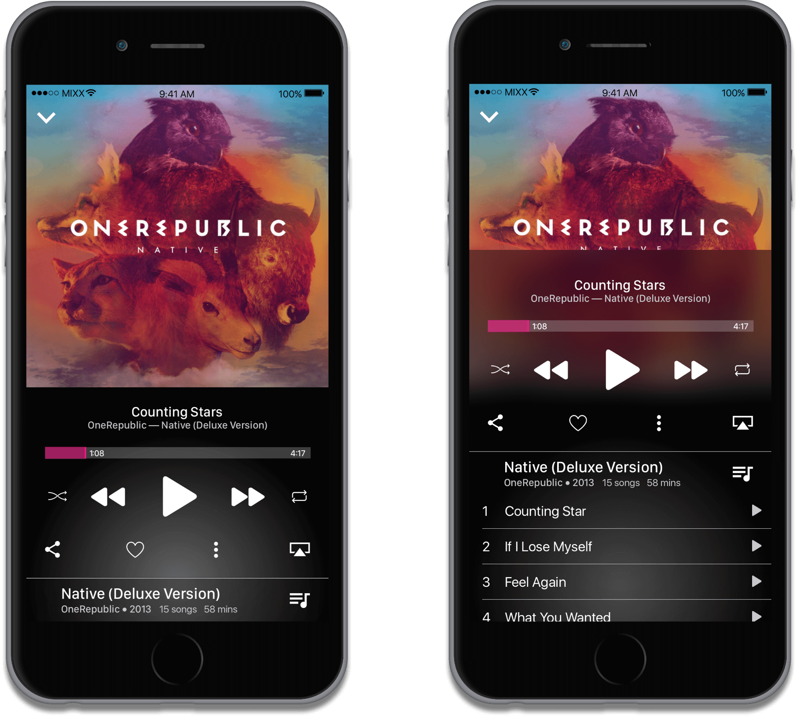

24.7 MIXX
An online music service that focuses on Virgin America's inflight experience.
Project Advisor: Aynne Valencia
You don’t have to download music to kill time anymore.
For Virgin Airlines flyers who currently subscribe to other streaming music services, 24.7MIXX is a new internet channel that allows subscribers to play music anywhere. Unlike most other music streaming services, 24.7MIXX cpntinuously streams music even in the aircraft.
“There’s little things that happen every day. What can you as interaction designers do with things that happen every day, how can you make these little boring things exciting.”
-Aynne Valencia (Instructor)

 |
On Air Entertainment
|
|
|
On Air Entertainment
|
Local Radio - An auditory sense of where you are.
When your airplane flies over a new area, local music will begin broadcasting.
Small Screen Lifestyle
|
 |
Small Screen Lifestyle
|


24.7 MIXX BRANDING
People love Virgin America because Virgin has their own special style of branding and overall charismatic service. 24.7MIXX incorporates Virgin America's signature colors and friendly personality to appeal to everybody. 24.7MIXX is designed to impress; we want our users to feel at home with our service, tell their friends, and use it time and time again.
More Info